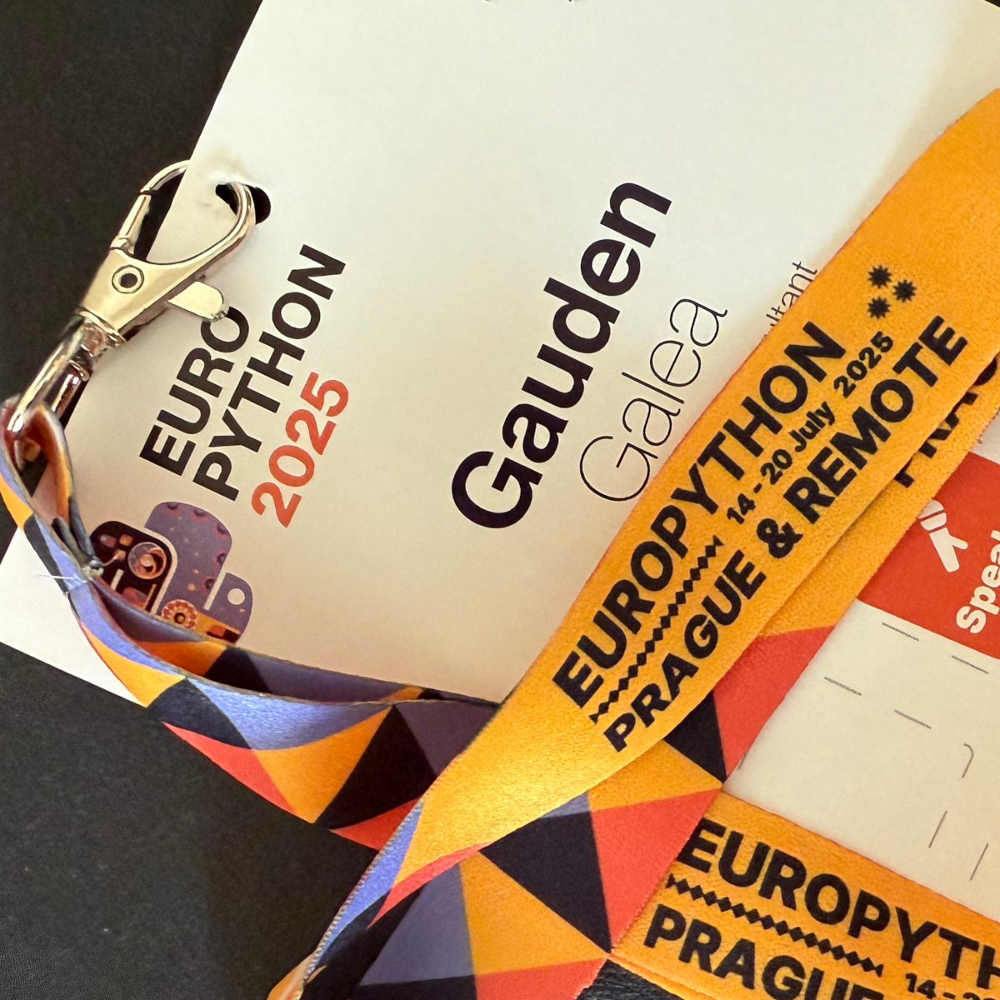

Hey Python...
Hey Python, are you OK?

Am I concerned?
Why should I be? After all, did I not witness many signs of energy, growth and support? Is not Python sitting right at the heart of the AI revolution?
The Community, out in full force...
I have written enthusiastically about the diversity, the joy, and the power of the Python Community, and I hope that I have provided ample evidence of the power and versatility of the language itself. Truly the idiom still holds, batteries included, not only in the standard library, but in the vibrant ecosystem and the energy of the people involved. It was amazing to witness the sheer creativity and virtuosity on prominent display at EP2025.
With Numerous Supporters...
Thanks are also due to the sponsors. They supported the meeting financially. And their representatives inserted themselves organically into the life of the conference. They deserve our appreciation.
import this
I remember (not sure how accurately) that David Crystal, in "The Stories of English", partly ascribed the global dominance of the English language to its remarkable capacity for adaptation and incorporation, borrowing vocabulary and structure, surviving by accretion of words and grammar.
I was reminded of that idea during the conference, where Pythonistas rubbed shoulders with Rustaceans, where summits were held on C and Rust and WebAssembly with equal prominence to any of the other, more Pythonic concerns, such as packaging or AI, and where Python felt more solid in the browser, with Pyodide and PyScript. And this is nothing new to Python: C extensions have always been a staple and even NumPy has some legacy Fortran code lurking inside it.
PEP 20: The Zen of Python.
Maybe, when the Zen of Python was first written, the strength of the language lay not in any of the nineteen precepts but in the very invocation: import this.
So why the niggling concern?
Source: The PSF has paused our Grants Program. Accessed 17 August 2025.
Soon after we closed the conference in celebration, there was an announcement on the conference Discord channel that the Python Software Foundation has paused its grants program for 2025.
In the announcement, the Board pointed out the massive rise in Python popularity, but they also show this graph and commented:
By contrast, the PSF’s available resources have decreased over the last three years and are projected to decrease again in 2025 due to increasing PyCon US and foundation costs. Much of the growth shown before 2022 in the chart below comes from grants we received that were restricted funds dedicated to specific staffing and other programs. The result is increasing global community activity against a decreasing pool of available funds.
I could not fail to hear familiar echoes of what is happening in WHO. The fall in income. The need to shift whatever donations are received from earmarked grants to flexible funding. The possibility that a global good may be choked from lack of resources. The dissonance between the centrality of a major global good (whether Python or global health), and the drop in funding.
Was 2022 a peak? Or was 2024 an outlier?
Perhaps I am overthinking it. Surely all will be well. Surely companies and countries profiting from the AI boom will step in. Surely the community will not takes its gains for granted and rise to the challenge.
And am I really going to end this celebratory essay with an anti-climax? Am I? If I do, it will only be because I care, because I would be interested to explore what I can do, and because I would like to spur others to act: to give of their time, money, or ideas.
(And anyway, who on Earth reads down to the last paragraph in a long, five-part blog?)